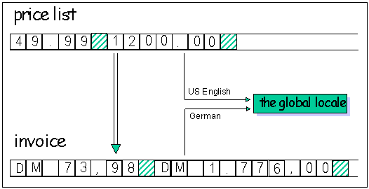
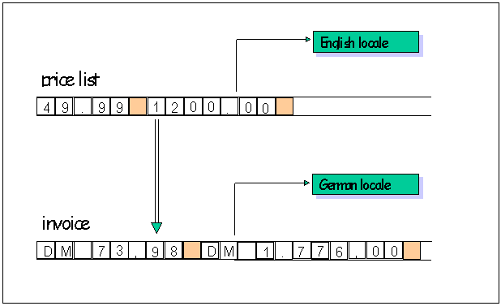
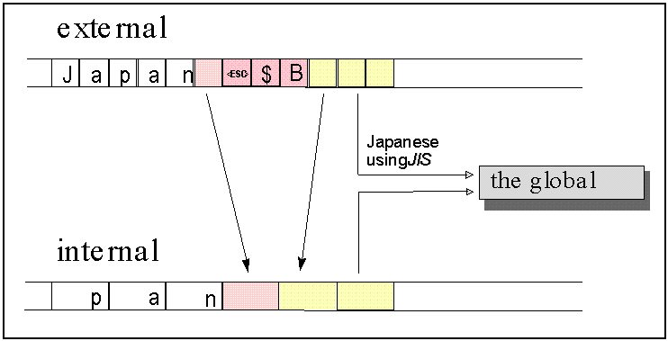

As we have seen so far, the C locale and the C++ locale offer similar services. However, the semantics of the C++ locale are different from the semantics of the C locale:
The Standard C locale is a global resource: there is only one locale for the entire application. This makes it hard to build an application that has to handle several locales at a time.
The Standard C++ locale is a class. Numerous instances of the standard locale class can be created at will, so you can have as many locale objects as you need.
To explore this difference in further detail, let us see how locales are typically used.
The C locale is commonly used as a default locale, a native locale, or in multiple locale applications.
Default locale. As a developer, you may never require internationalization features, and thus you may never call std::setlocale(). If you can safely assume that users of your applications are accommodated by the classic US English ASCII behavior, you have no need for localization. Without even knowing it, you always use the default locale, which is the US English ASCII locale.
Native locale. If you do plan on localizing your program, the appropriate strategy may be to retrieve the native locale once at the beginning of your program, and never, ever change this setting again. This way your application adapts itself to one particular locale, and uses this throughout its entire runtime. Users of such applications can explicitly set their favorite locale before starting the application. On UNIX systems, they do this by setting environment variables such as LANG; other operating systems may use other methods.
In your program, you can specify that you want to use the user's preferred native locale by calling std::setlocale("") at startup, passing an empty string as the locale name. The empty string tells setlocale to use the locale specified by the user in the environment.
Multiple locales. It may well happen that you do have to work with multiple locales. For example, to implement an application for Switzerland, you might want to output messages in Italian, French, and German. As the C locale is a global data structure, you must switch locales several times.
Let's look at an example of an application that works with multiple locales. Imagine an application that prints invoices to be sent to customers all over the world. Of course, the invoices must be printed in the customer's native language, so the application must write output in multiple languages. Prices to be included in the invoice are taken from a single price list. If we assume that the application is used by a US company, the price list is in US English.
The application reads input (the product price list) in US English, and writes output (the invoice) in the customer's native language, say German. Since there is only one global locale in C that affects both input and output, the global locale must change between input and output operations. Before a price is read from the English price list, the locale must be switched from the German locale used for printing the invoice to a US English locale. Before inserting the price into the invoice, the global locale must be switched back to the German locale. To read the next input from the price list, the locale must be switched back to English, and so forth. Figure 6 summarizes this activity.

Here is the C code that corresponds to the previous example:
double price;
char buf[SZ];
while ( ... ) // processing the German invoice
{
std::setlocale(LC_ALL, "En_US");
std::fscanf(priceFile,"%lf",&price);
// convert $ to DM according to the current exchange rate
std::setlocale(LC_ALL,"De_DE");
std::strfmon(buf,SZ,"%n",price);
std::fprintf(invoiceFile,"%s",buf);
}
Using C++ locale objects dramatically simplifies the task of communicating between multiple locales. The iostreams in the C++ Standard Library are internationalized so that streams can be imbued with separate locale objects. For example, the input stream can be imbued with an English locale object, and the output stream can be imbued with a German locale object. In this way, switching locales becomes unnecessary, as demonstrated in Figure 7:

Here is the C++ code corresponding to the previous example:
priceFile.imbue(std::locale("En_US"));
invoiceFile.imbue(std::locale("De_DE"));
moneytype price;
while ( ... ) // processing the German invoice
{
priceFile >> price;
// convert $ to DM according to the current exchange rate
invoiceFile << price;
}
This example assumes that you have created a class, moneytype, to represent monetary values, and that you have written iostream insertion << and extraction >> operators for the class. Further, it assumes that these operators format and parse values using the std::money_put and std::money_get facets of the locales imbued on the streams they are operating on. See Chapter 26 for a complete example of this technique using phone numbers rather than monetary values. The moneytype class is not part of the C++ Standard Library.
Because the examples given above are brief, switching locales might look like a minor inconvenience. However, it is a major problem once code conversions are involved.
To underscore the point, let us revisit the JIS encoding scheme using the shift sequence described in Figure 2, which is repeated for convenience here as Figure 8. As you remember, you must maintain a shift state with these encodings while parsing a character sequence:
Suppose you are parsing input from a multibyte file which contains text that is encoded in JIS, as shown in Figure 9. While you parse this file, you have to keep track of the current shift state so you know how to interpret the characters you read, and how to transform them into the appropriate internal wide character representation.

The global C locale can be switched during parsing; for example, from a locale object specifying the input to be in JIS encoding, to a locale object using EUC encoding instead. The current shift state becomes invalid each time the locale is switched, and you have to carefully maintain the shift state in an application that switches locales.
As long as the locale switches are intentional, this problem can presumably be solved. However, in multithreaded environments, the global C locale may impose a severe problem, as it can be switched inadvertently by another otherwise unrelated thread of execution. For this reason, internationalizing a C program for a multithreaded environment is difficult.
If you use C++ locales, on the other hand, the problem simply goes away. You can imbue each stream with a separate locale object, making inadvertent switches impossible. Let us now see how C++ locales are intended to be used.
The C++ locale is commonly used as a default locale, with multiple locales, and as a global locale.
Classic locale. If you are not involved with internationalizing programs, you won't need C++ locales any more than you need C locales. If you can safely assume that users of your applications are accommodated by classic US English ASCII behavior, you do not require localization features. For you, the C++ Standard Library provides a predefined locale object, std::locale::classic(), that represents the US English ASCII locale.
Native locale. We use the term native locale to describe the locale that has been chosen as the preferred locale by the user or system administrator. On UNIX systems, this is usually done by setting environment variables such as LANG. You can create a C++ locale object for the native locale by calling the constructor std::locale(""), that is, by requesting a named locale using an empty string as the name. The empty string tells the system to get the locale name from the environment, in the same way as the C library function std::setlocale("").
Named locales. As implied above, a locale can have a name. The name of the classic locale is "C". Unfortunately, the names of other locales are very much platform dependent. Consult your system documentation to determine what locales are installed and how they are named on your system. If you attempt to create a locale using a name that is not valid for your system, the constructor throws a runtime_error exception.
Multiple locales. Working with many different locales becomes easy when you use C++ locales. Switching locales, as you did in C, is no longer necessary in C++. You can imbue each stream with a different locale object. You can pass locale objects around and use them in multiple places.
Global locale. There is a global locale in C++, as there is in C. Initially, the global locale is the classic locale described above. You can change the global locale by calling std::locale::global().
You can create snapshots of the current global locale by calling the default constructor for a locale, std::locale::locale(). Snapshots are immutable locale objects and are not affected by any subsequent changes to the global locale.
Internationalized components like iostreams use the global locale as a default. If you do not explicitly imbue a stream with a particular locale, it is imbued by default with a snapshot of whatever locale was global at the time the stream was created.
Using the global C++ locale, you can work much as you did in C. You activate the native locale once at program start -- in other words, you make it global -- and use snapshots of it thereafter for all tasks that are locale-dependent. The following code demonstrates this procedure:
std::locale::global(std::locale("")); //1
...
std::string t = print_date(today, std::locale()); //2
...
std::locale::global(std::locale("Fr_CH")); //3
...
std::cout << something; //4
| //1 | Make the native locale global. |
| //2 | Use snapshots of the global locale whenever you need a locale object. Assume that print_date() is a function that formats dates. You would provide the function with a snapshot of the global locale in order to do the formatting. |
| //3 | Switch the global locale; make a French locale global. |
| //4 | Note that in this example, the standard stream cout is still imbued with the classic locale, because that was the global locale at program startup when std::cout was created. Changing the global locale does not change the locales of pre-existing streams. If you want to imbue the new global locale on cout, you should call std::cout.imbue(locale()) after calling std::locale::global(). |
The C locale and the C++ locales are mostly independent. However, if a C++ locale object has a name, making it global via std::locale::global() causes the C locale to change through a call to std::setlocale(). When this happens, locale-sensitive C functions called from within a C++ program use the changed C locale.
There is no way to affect the C++ locale from within a C program.